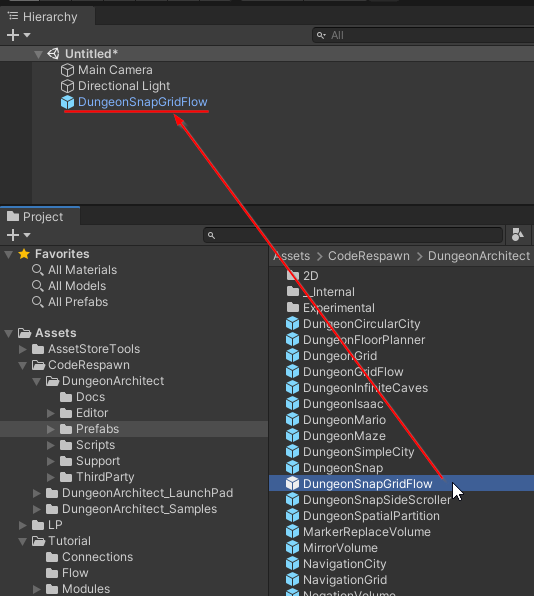

It's time to use everything we've created to build a dungeon
Create Theme file
Create an empty theme file somewhere in the content browser. We'll visit this later to spawn items in our modules (like NPCs, Spawners, Pickups, player prefab etc.)
Rename it to GameItemTheme
Setup Dungeon Game Object
Create a new scene and drop in a DungeonSnapGridFlow prefab from Assets > CodeRespawn > DungeonArchitect > Prefabs

Select the DungeonSnapGridFlow game object and inspect the properties
We'll assign the three assets we've created earlier
Assign the GameItemTheme create created above
Assign the Snap Grid Flow Graph
Assign the Module Database
Build Dungeon
Select the DungeonSnapGridFlow game object and click Build Dungeon
Change the seed and click build again to get a different dungeon
Debug Draw
You get a debug overlay of the layout graph rendered by default when you build the dungoen. You'll want to turn this off in your final dungeon
Do this by unchecking the Debug Draw check box and rebuild the dungeon
Let's keep the Debug Draw check box on for now so we can see the layout graph overlayed in the scene
Keep Things Organized
When you build the dungeon, it clutters up the hierarchy
We'll configure it so that our dungeon is built under a certain game object and won't clutter the root.
Create a new empty game object and name it DungeonItems
Reset the transform
Set it to static
Assign this game object to the DungeonSnapGridFlow gameobject's Pool Dungeon Scene Provider component
Click Build Dungeon again and our dungeon will be built under the DungeonItems game object
Save Map
We've set up our dungeon game object. Save this scene somewhere, we'll revisit it later